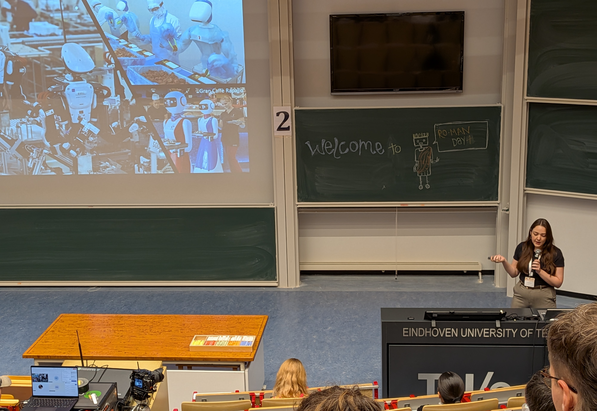

Fostering Human-Robot Rapport
We explore how robots can exhibit social skills, like building rapport, that can facilitate positive long-term human-robot interactions.
We explore how robots can exhibit social skills, like building rapport, that can facilitate positive long-term human-robot interactions.

We examine how factors such as robot personality, customizability, and autonomy can influence human-robot interactions.
We study how robots can shape human-to-human interactions in groups to improve group outcomes such as trust and inclusion.
Work in our lab led by Lauren Wright demonstrated that children experience less anxiety when reading aloud to a robot as opposed to a human adult. Published in Science Robotics (link to the article here) demonstrates a unique advantage that robots can have in educational settings, creating safe spaces for children to make mistakes while learning without fearing judgment. This work has already been featured in UChicago News and UChicago CS News.

Lauren recently presented her work exploring how people respond to a robot's instructions that may undermine another robot, specifically in the context of ingroup and outgroup dynamics, at the 2025 RO-MAN Conference. Read more about this exciting work soon, once the conference proceedings are published!
NPR published a piece Neurotic robots can be more relatable than extroverted bots, study finds discussing the findings of our recent HRI 2025 paper exploring robot personality traits and the particular potential of neurotic personality traits for robots. You can read the full paper here (authors: Alex Wuqi Zhang, Clark Kovacs, Liberto de Pablo, Justin Zhang, Maggie Bai, Sooyeon Jeong, Sarah Sebo).
Our work investigating user how users perceive robots as social agents when they have the ability to control and customize their behavior was featured in UChicago CS News — here's a link to the article. This work was published at HRI 2025 and received a best paper honorable mention award. You can read the full paper here (authors: Alex Wuqi Zhang, Rafael Queiroz, and Sarah Sebo).